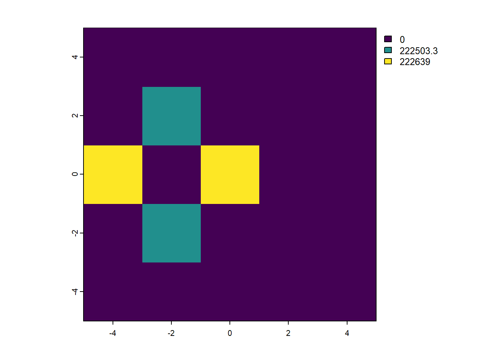

Code
library(terra)terra 1.7.78Code
r <- rast(xmin=-4, xmax=9,
ncols=10)
res(r)[1] 1.3 1.0library(terra)terra 1.7.78r <- rast(xmin=-4, xmax=9,
ncols=10)
res(r)[1] 1.3 1.0r2 <- rast(xmin=-4, xmax=9,
resolution = c(1.3, 1))
ncol(r2)[1] 10r3 <- rast(xmin=-4, xmax=5,
ncols=10)
res(r3)[1] 0.9 1.0empty_rast <- rast()# Question 1
rr <- rast(xmin=-5, xmax=5, ymin=-5, ymax=5, res=2)
# By looking at the help file, we realized that res overrides nrows/ncols
# This code uses the default global extent
rr2 <- rast(nrows=5, ncols=5, res=2)# Question 2
values(rr) <- runif(25)
# The "values were recycled" error clues us in that we don't have 25 cells
values(rr2) <- runif(25)Warning: [setValues] values were recycled# Question 3
origin(rr)[1] 1 1# Question 4
values(rr)[adjacent(rr, cells=12)] <- NA
plot(rr)
# You can do this in two steps
# by making an object to hold the adjacent cell numbers
adj <- adjacent(rr, cells=12)
values(rr)[adj] <- NAFor more information on subsetting, see the Software Carpentries R for Reproducible Data Analysis: Subsetting Data lesson.
# Question 5
plot(distance(rr))
|---------|---------|---------|---------|
=========================================

To run examples of functions, go to the help file and scroll down to the “Examples” section. You can either copy-paste the code into your file or click the link that says “run examples.”
# Question 2
fire_rast <- rast("/opt/data/data/assignment03/wildfire_hazard_agg.tif")
plot(distance(fire_rast))